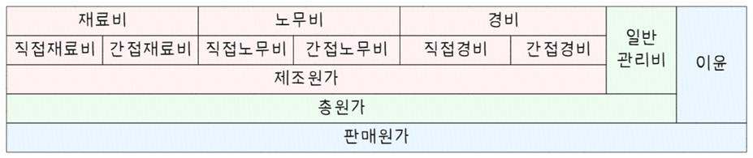

원가관리
원가, 비용, 매몰원가, PRM, 감가상각
원가
원가(cost)는 경영에 있어 일정 단위 제품 또는 용역 생산에 투입된 재화 또는 용역 소비를 화폐가치적으로 표시한 것이다. 원가는 일정 단위 제품 또는 용역 생산을 위해 소비된 경제적 가치이기 때문에 일정 기간 수입에 관련되는 비용과는 다르다. 일반적으로 화폐적 가치로 보면 재료, 노무, 기계 등 사용 형태를 돈으로 환산한 것이라 말할 수 있는데 재료비, 노무비, 경비로 구성된다.

원가는 귀속 대상에 따라 직접비·간접비로, 원가 행태에 따라 고정비·변동비로 나눌 수 있으며, 실제 현장에서 비용을 구분하고 관리하는 데 중요한 기준이 된다.
| 구분 | 정의 | 대표 예 |
|---|---|---|
| 직접비 | 특정 제품에 직접적으로 추적 가능한 원가 | 직접재료비, 직접노무비 |
| 간접비 | 여러 제품에 걸쳐 공통적으로 발생하여 개별 추적이 어려운 원가 | 공장 임차료, 관리자 급여, 감가상각비 |
| 고정비 | 생산량 변화와 관계없이 일정한 원가 | 임대료, 감가상각비, 관리자 급여 |
| 변동비 | 생산량 변화에 따라 증감하는 원가 | 재료비, 시간급 임금, 포장재 비용 |
직접비 / 간접비
- 직접비
- 제품 1개에 소요된 특정 자원 투입이 명확히 식별되는 경우
- 예: 의자 생산 시 사용되는 원목, 조립을 위한 노동자의 인건비 등
- 간접비
- 제품별로 직접 배부가 어려운 공통 원가
- 예: 공장장 월급, 조명·전기세, 기계 감가상각 등
고정비 / 변동비
- 고정비
- 생산량에 상관없이 일정 기간 동안 변하지 않는 비용
- 예: 공장 건물 임대료, 기계 감가상각, 보험료, 경영진 급여
- 변동비
- 생산량 증가 시 비례적으로 증가하는 비용
- 예: 생산에 투입되는 원재료비, 시간제 근로자 인건비, 배송비
혼합 사례
- 고정비이면서 간접비
- 예: 공장 임대료, 관리자 급여 → 생산량과 관계없이 발생하며 특정 제품에 직접 귀속되지 않음
- 변동비이면서 직접비
- 예: 제품 하나당 들어가는 재료비 → 생산량에 비례하고, 특정 제품에 명확히 귀속됨
원가의 분류는 제품 원가 산정, 예산 관리, 손익 분석, 의사결정 등에 활용되며, 직접비·간접비는 귀속성 중심, 고정비·변동비는 비용 행태 중심의 분류 방식임. 두 분류를 조합하면 보다 정교한 원가관리가 가능하다.
원가절감 방안
원가절감은 시장 경력력 확보에 있어 중요한 부분이다. 다음과 같은 방법을 통해 원가를 절감할 수 있다.
- 공정 최적화
- 자동화 도입: 반복적인 작업을 자동화하여 인건비를 절감하고, 실수를 줄이다.
- 라인 밸런싱(Line Balancing): 작업 부하를 균등하게 분배하여 대기 시간을 최소화하고 생산 속도를 향상시키다.
- 표준화 및 모듈화: 제품이나 부품을 표준화하여 생산 공정을 간소화하고 재고 관리 비용을 절감하다.
- 자동화 도입: 반복적인 작업을 자동화하여 인건비를 절감하고, 실수를 줄이다.
- 자재 관리 개선
- 재고 관리 최적화: 필요한 자재만 적시에 주문하여 재고 과잉을 방지하고 자재 비용을 줄이다.
- 자재 효율성 향상: 자재 사용 방법을 개선하고 남는 자재를 재활용하여 자재 낭비를 최소화하다.
- 대체 자재 사용: 고급 자재 대신 저렴한 대체 자재를 사용하여 원가를 절감하다.
- 재고 관리 최적화: 필요한 자재만 적시에 주문하여 재고 과잉을 방지하고 자재 비용을 줄이다.
- 에너지 효율성 개선
- 에너지 절약: 에너지 소비를 효율적으로 관리하여 전력, 가스 등의 비용을 줄이다.
- 지속 가능한 제조 공정: 재활용 가능 자재를 사용하거나 에너지를 회수하는 시스템을 도입하여 원가를 절감하다.
- 에너지 절약: 에너지 소비를 효율적으로 관리하여 전력, 가스 등의 비용을 줄이다.
- 품질 관리 강화
- 품질 개선: 불량률을 줄여 재작업, 불량품 처리 비용을 절감하다.
- 예방적 유지보수(Predictive Maintenance): 기계나 장비의 고장을 예측하여 사전에 유지보수를 진행하고 생산 중단을 줄이다.
- 품질 개선: 불량률을 줄여 재작업, 불량품 처리 비용을 절감하다.
- 인력 관리 효율화
- 인력 교육 및 다기능화: 직원들이 여러 작업을 할 수 있게 하여 인력 배치를 효율적으로 관리하다.
- 효율적인 노동 배치: 대기 시간이나 휴식 시간을 줄여서 노동력을 최대한 활용하다.
- 인력 교육 및 다기능화: 직원들이 여러 작업을 할 수 있게 하여 인력 배치를 효율적으로 관리하다.
- 아웃소싱 활용
- 비핵심 업무 아웃소싱: 물류, 청소, IT 등 비핵심 업무를 외부 업체에 맡겨 운영비용을 절감하다.
- 비핵심 업무 아웃소싱: 물류, 청소, IT 등 비핵심 업무를 외부 업체에 맡겨 운영비용을 절감하다.
- 공급망 최적화
- 공급업체와의 협력 강화: 장기 계약을 통해 원자재를 저렴하게 구매하고 가격 협상을 통해 원가를 절감하다.
- 지역별 공급망 최적화: 물류비를 줄이기 위해 공급망을 지역별로 최적화하다.
- 공급업체와의 협력 강화: 장기 계약을 통해 원자재를 저렴하게 구매하고 가격 협상을 통해 원가를 절감하다.
- Lean 제조 기법 도입
- 불필요한 낭비 제거: Lean 기법을 통해 대기 시간, 과잉 생산 등 불필요한 낭비를 제거하여 원가를 절감하다.
비용
비용과 원가는 모두 기업의 경제 활동에서 발생하는 지출을 의미하지만, 사용되는 맥락과 범위에서 차이가 있다.
- 비용
- 비용은 제품이나 서비스를 제공하기 위해 발생하는 모든 지출을 포괄하는 개념이다. 운영, 관리, 마케팅, 인건비 등 기업 활동 전반에서 발생하는 지출이 포함된다.
- 원가
- 원가는 특정 제품이나 서비스를 생산하는 데 직접적으로 투입된 재료비, 인건비, 제조 간접비 등을 의미한다. 이는 생산 과정에 초점을 맞춘 개념으로, 제품의 가치를 결정하는 데 중요한 역할을 한다.
주요 차이점은 다음과 같다.
| 구분 | 비용 | 원가 |
|---|---|---|
| 정의 | 기업 활동 전반에서 발생하는 지출 | 제품이나 서비스를 생산하는 데 직접 발생하는 지출 |
| 범위 | 넓음 (운영, 관리, 마케팅 등 포함) | 좁음 (재료비, 인건비, 제조 간접비 등) |
| 포함 항목 | 판매비, 관리비, 연구개발비 등 | 직접 재료비, 직접 인건비, 제조 간접비 |
| 주요 목적 | 기업의 전반적인 경영 성과 분석 | 제품 단가 계산 및 생산 효율성 분석 |
| 적용 분야 | 회계 전반 | 제조 및 생산 관리 |
매몰원가
매몰원가(Sunk Cost)는 이미 발생했으며, 회수할 수 없는 비용을 의미한다. 예를 들어, 어떤 프로젝트에 투입한 비용이 이미 지출되었다면, 그 비용은 매몰원가가 된다. 이런 비용은 의사 결정 시 고려하지 않아야 한다. 왜냐하면 이미 회수할 수 없기 때문이다.
- 매몰원가의 대표적인 예
-
- 연구개발 비용: 새로운 제품이나 서비스 개발에 들어간 비용
- 교육 비용: 직원 교육에 사용된 비용
- 설비 비용: 오래된 설비나 장비의 구매 비용
매몰원가를 고려하지 않는 것이 중요한 이유는, 이를 고려하면 현재의 상황과 미래의 결과를 판단하는데 왜곡이 발생할 수 있기 때문이다. 현 시점에서의 의사 결정은 오직 현재와 미래에 발생할 비용과 이익을 기준으로 이루어져야 한다.
PRM
PRM(Pricing and Revenue Management)은 가격 설정과 수익 관리를 최적화하여 기업의 수익을 극대화하는 전략적 접근 방식이다. 주로 항공, 호텔, 유통, e-커머스, 엔터테인먼트 산업에서 활용되며, 수요 예측, 가격 차별화, 동적 가격 책정 등의 기법을 포함한다.
- 주요 개념
-
- 수요 예측: 과거 데이터를 분석하여 미래 수요를 예측하고 가격을 조정
- 가격 차별화: 고객 세그먼트별로 차별적인 가격을 설정하여 수익 극대화
- 동적 가격 책정: 실시간으로 시장 상황과 고객 행동을 분석하여 가격을 조정
- 재고 및 용량 관리: 한정된 자원을 최대한 효율적으로 활용하여 수익을 극대화
- 수요 예측: 과거 데이터를 분석하여 미래 수요를 예측하고 가격을 조정
| 장점 | 단점 |
|---|---|
| 수익 극대화를 위한 최적의 가격 전략 수립 가능 | 복잡한 데이터 분석 및 알고리즘이 필요하여 운영 비용 증가 |
| 실시간 가격 조정을 통해 시장 변화에 유연하게 대응 가능 | 고객이 가격 변동성을 부정적으로 인식할 가능성 있음 |
| 고객 세분화를 활용하여 맞춤형 가격 정책 적용 가능 | 경쟁사의 가격 전략에 따라 효과가 제한될 수 있음 |
- 활용 사례
-
- 항공사: 성수기와 비수기에 따라 항공권 가격을 조정
- 호텔: 예약률과 계절성에 따라 객실 요금을 조정
- 유통 및 e-커머스: 프로모션과 할인 전략을 활용하여 매출 극대화
- 렌터카 및 공유 경제 서비스: 실시간 수요에 맞춰 요금 변동
- 항공사: 성수기와 비수기에 따라 항공권 가격을 조정
PRM은 데이터 기반 의사결정을 통해 기업의 수익을 극대화하는 중요한 전략이며, AI 및 머신러닝 기술과 결합하여 더욱 정교한 가격 전략을 구현할 수 있다.
감가상각
감가상각(減價償却, Depreciation)은 자산의 취득원가를 자산의 내용연수에 걸쳐 비용으로 배분하는 회계 절차를 의미한다. 쉽게 말해, 공장 기계나 차량 같은 유형자산의 가치가 시간이 지나면서 점차 감소하는 것을 회계적으로 반영하는 방법이다. 모든 유형자산은 보유기간 중 감가상각하는 것이 원칙이지만 토지와 건설중인 자산은 예외이다.
감가상각을 수행하기 위해서는 취득원가, 잔존가치, 내용연수를 알아야 하는데 이를 감가상각계산 3요소라고 한다.
- 취득원가
- 유형자산 최초 구입가격 또는 제작가액에 이를 본래 목적에 사용 가능하도록 하는데 소요된 일체 부대비용을 합계한 금액
- 잔존가치
- 자산이 이미 오래되어 내용연수 종료시점에 도달하였다는 가정하에 자산 처분으로부터 현재 획득할 금액에서 처분부대원가를 차감한 금액에 대한 추정치
- 내용연수
- 기업에서 자산을 사용가능할 것으로 기대되는 기간 또는 자산에서 얻을 것으로 예상되는 생산량이나 이와 유사한 단위 수량
- 감가상각 필요성
-
구분 설명 자산가치 현실화 시간이 지나면서 자산은 마모, 기술노후화로 가치가 줄어듦 수익-비용 대응 원칙 자산을 사용해 수익을 창출할 때, 해당 기간에 비용도 인식해야 함 세무 목적 감가상각은 법인세 계산 시 비용으로 인정되어 세금 부담을 줄여줌
감가상각 대상 자산 : | 자산 종류 | 예시 | | —– | —————————————– | | 유형자산 | 기계장치, 차량, 건물, 공구 | | 무형자산 | 소프트웨어, 특허권 (→ 감가상각이 아닌 ’상각’이라는 용어 사용) |
※ 토지는 시간이 지나도 가치가 감소하지 않는다고 보기 때문에 감가상각 대상이 아님
감가상각 방법에는 정액법, 정률법, 생산량 비례법, 이중체감잔액법, 연수합계법 등이 있다.
| 방법 | 수식 | 특징 |
|---|---|---|
| 정액법 | \(\frac{취득원가 - 잔존가치}{내용연수}\) | 매년 동일한 금액을 감가상각 |
| 정률법 | \(기초장부가액 \times 상각률\) | 초기에 큰 금액을 상각, 점점 줄어듦 |
| 생산량 비례법 | \(\frac{취득원가 - 잔존가치}{총예상생산량} \times 해당연도생산량\) | 자산의 실제 사용량에 따라 감가상각 비용 배분 |
- 정액법
-
- 내용연수에 걸쳐 매 기간 일정하게 감가상각비를 인식하는 방법
\[ \text{당해연도 감가상각비 = } \frac{\text{취득원가 - 잔존가치}}{\text{내용연수}} \]
- 정률법
-
- 내용연수 동안 감가상각비가 매 기간 감소하는 방법으로 매 기간 자산 기초장부금액에 일정한 정률법을 곱하여 감가상각비를 계산
- 당기감가상각비 = 미상각 잔액(기초 장부가액) x 상각률
\[상각률 = 1-\sqrt[n]{\frac{잔존가액}{취득원가}}\]
\[n은 내용연수, 미상각 잔액 = 취득원가 - 감가상각 누계액\]
- 생산량비례법
-
- 보유중인 자산 가치감소가 단순히 시간이 경과함에 다라 나타나기보다는 생산량 또는 작업시간에 비례하여 나타난다는 전제로 계산
- 생산 없이는 비용이 발생하지 않는다는 것을 전제하기 때문에 수익/미용 대응 관계를 잘 반영시켜 주는 방법
- 주로 광산, 유전, 산림 등과 같은 소모성 또는 고갈성 자산 채취산업에 많이 사용
\[감가상각비 = (취득원가 - 잔존가치) \times \frac{실제생산량}{총추정생산량}\]
- 이중체감잔액법
-
- 미상각잔액에 매기 정액법에서 상각률에 2배를 곱하여 감가상각비를 계산하는 방법
- 미상각잔액에 일정한 상각률을 곱하여 감가상각비를 구하게 되므로 시간이 경과하여 기초장부가액이 감소함에 따라 각 연도에 감가상각비도 점차적으로 감소
\[\text{감가상각비 = (취득원가 - 기초감가상각누계액) } \times \text{상각률}\]
\[\text{여기서 상각률 }= \frac{1}{내용연수} \times 2\]
- 연수합계법
-
- 정률법과 마찬가지로 초기에 많은 감가 상각비를 인가하고 기간이 지나면서 적은 감가상각비를 인가하는 체감상각법 일종
- 급수법이라고도 하며, 취득원가에서 잔존가액을 차감한 금액을 내용연수 합계로 나누고, 그 금액에 내용연수 역순을 곱하여 산출
\[\text{감가상각비 = (취득원가 - 잔존가액) } \times \frac{내용연수 \ 역순}{내용연수 \ 합계}\]
상황: A사는 5년간 사용할 기계를 1,000만 원에 구입했고 잔존가치는 100만 원이라고 가정할 경우, : - 정액법: (1000-100)/5 = 180, 즉 매년 180만원씩 감가상각 - 정률법(상각률 40%) 사용 시
| 연도 | 기초장부가액 | 감가상각비 (40%) | 감가상각 후 잔액 | | — | —— | ———– | ——— | | 1년차 | 1,000 | 400 | 600 | | 2년차 | 600 | 240 | 360 | | 3년차 | 360 | 144 | 216 |
참고자료
부가원가와 중성비용
- 부가원가
-
- 원가이나 비용이 아닌 항목으로 기업주 보수, 자기자본 이자, 기업주 소유 토지계산 지대 등이 해당하며 원가계산상으로 원가로 취급, 손익계산상 비용으로 취급하지 않음
- 중성비용
-
- 손익계산상으로 비용이나 원가로 취급하지 않는 항목으로 기부금, 유가증권평가손실 등과 같이 생산에 직접 관계가 없는 비용
각주